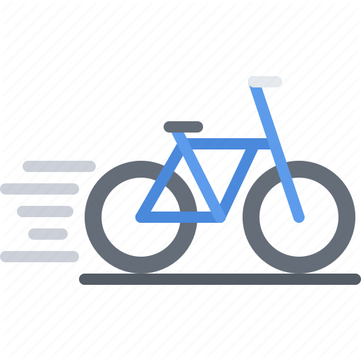

All tours are fully supported and travel from one beautiful 4 star inn to another. Each tour region is specially selected for historic value, eye candy, cycling terrain, and great lodging.
Each tour is limited to 20 cyclists. This allows the group to become very close and spend a lot of time with their tour leader. The tours are geared for the amateur cyclist, with no daily ride over 60 miles.
Below is a list of our tour offerings.
- Route 66
- Follow our nation’s most storied highway. See the sights made famous by James Dean, Dennis Hopper and Peter Fonda.
- Chesapeake Bay
- Explore the largest watershed system in our country.
- Blue Ridge Parkway
- The Blue Ridge Parkway is America’s Narrowest National Park. It traverses the Scenic Appalachian Mountains through North and South Carolina.
- Civil War Campaign
- Starting in historic Gettysburg PA, you visit several major battlefields of the Civil War.
- Alaskan Adventure
- Ride from Anchorage Alaska through the wilds of Alaska. Refill your water bottles from a glacial stream and bicycle above the tree line.
- Moab Slick Rock
- Ride and visit a mountain biker’s paradise.
